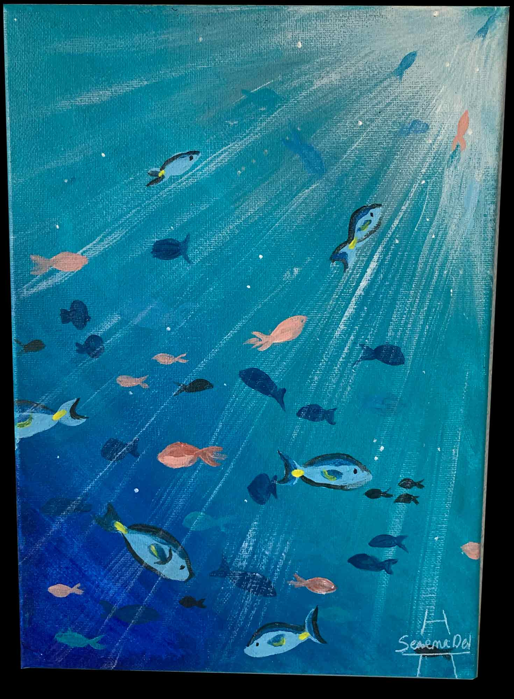

J'ai voulu refaire les couvertures d'album de Josman - J.O.$, prince K et Kanye West - Graduation.
Expérimentations sur le Cap-Vert
Peintures - aquarelles - montage photos
2023
Le Cap-Vert est un refuge pour de nombreuses espèces de tortues.

Afrique féerique
Peintures
2022 - 2024
Pour cette serie de peinture je me suis inspirée des films d'animation du réalisteur
Michel Ocelot: "Kirikou et la Sorcière" (1998) et "Princes et Princesses" (2000)